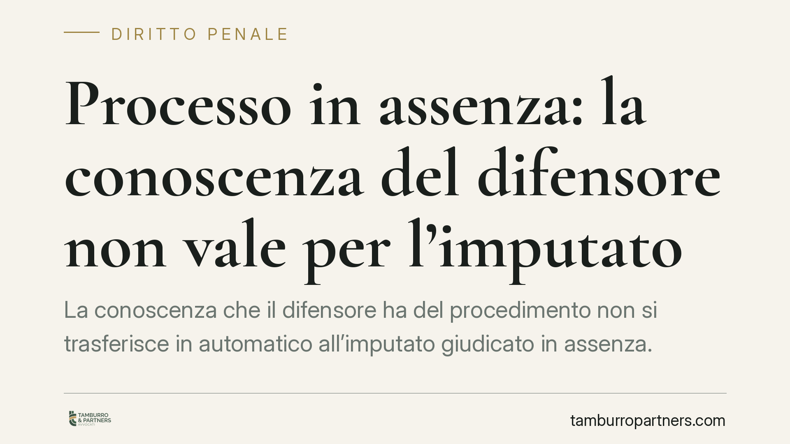

Processo in assenza: la conoscenza del difensore non vale per l'imputato
La conoscenza che il difensore ha del procedimento non si trasferisce in automatico all'imputato giudicato in assenza. Per negare i rimedi previsti dal codice, il giudice deve provare che l'interessato conoscesse davvero il processo, sulla base di dati oggettivi. Un principio che tocca il confine tra efficienza processuale e diritto di difesa, e che impone attenzione alla ricostruzione delle notifiche.

Il principio
Una pronuncia della Corte di Cassazione torna su un punto delicato del processo penale: sapere che un procedimento esiste non equivale, per l'imputato, ad averne conoscenza effettiva solo perché il suo avvocato ne era informato.
La questione riguarda chi viene giudicato in assenza, cioè senza partecipare al processo. Il nodo è stabilire quando questa assenza è frutto di una scelta consapevole e quando, invece, deriva dal fatto che l'imputato non ha mai saputo nulla del procedimento a suo carico.
*(La massima e gli estremi della pronuncia richiamata dalla fonte sono in corso di verifica in banca dati: il principio esposto riflette l'orientamento consolidato in materia.)*
Inquadramento normativo
È importante una precisazione terminologica. L'istituto della contumacia è stato abrogato dalla legge 28 aprile 2014, n. 67. Oggi il codice disciplina il processo in assenza, poi ulteriormente riformato dalla cosiddetta riforma Cartabia (D.Lgs. 10 ottobre 2022, n. 150). Parlare ancora di «contumacia» è tecnicamente scorretto.
I presupposti per procedere in assenza sono fissati dall'art. 420-bis c.p.p.: il giudice può andare avanti senza l'imputato solo quando risulta che questi ha avuto effettiva conoscenza della pendenza del processo e vi ha volontariamente rinunciato, oppure quando ricorrono elementi che ne dimostrano la consapevolezza.
Quando il processo si è svolto in assenza ma l'imputato non ne ha avuto conoscenza effettiva, il rimedio è la rescissione del giudicato prevista dall'art. 629-bis c.p.p.: consente, entro termini precisi, di ottenere la revoca della sentenza passata in giudicato e la celebrazione di un nuovo giudizio.
Il baricentro, dunque, è l'effettiva conoscenza dell'imputato. Ed è qui che si inserisce il principio: la conoscenza del difensore non la sostituisce.
Perché la distinzione conta
Il difensore di fiducia riceve comunicazioni e segue il procedimento. Ma la sua informazione resta cosa diversa dalla consapevolezza personale dell'imputato. Un conto è che l'avvocato sappia; altro è che l'assistito abbia ricevuto una notifica valida e sia stato messo in condizione di scegliere se partecipare.
La conseguenza pratica riguarda l'onere della prova. Non è l'imputato a dover dimostrare di non aver saputo: sono l'accusa e il giudice a dover dimostrare, con dati oggettivi, che la conoscenza del procedimento vi è stata. Notifiche regolari, atti ricevuti personalmente, dichiarazioni o elezioni di domicilio effettive: elementi concreti, non presunzioni ricavate dalla sola presenza del difensore.
È un equilibrio che tutela chi, per irreperibilità incolpevole, errori di notifica o cambi di residenza, si ritrova condannato senza aver mai partecipato. Dove manca la prova della conoscenza effettiva, la strada dei rimedi previsti dal codice resta percorribile.
Implicazioni pratiche
Per chi scopre di essere stato giudicato in assenza, il punto di partenza è sempre la ricostruzione documentale: come e dove sono stati notificati gli atti, se vi è stata una scelta consapevole di non comparire, se esistono elementi che il giudice ha interpretato come prova di conoscenza.
I termini per attivarsi sono brevi e decorrono da momenti specifici indicati dalla legge. La tempestività, in questa materia, è spesso decisiva: un rimedio azionato oltre i termini difficilmente è recuperabile.
Cosa fare in concreto
- Verifica le notifiche: controlla come e dove sono stati consegnati gli atti del procedimento e se la consegna è avvenuta a mani proprie o con modalità sostitutive.
- Conserva ogni documento utile a dimostrare l'assenza di conoscenza effettiva: cambi di residenza, periodi all'estero, errori nell'indirizzo, comunicazioni mai ricevute.
- Agisci subito: i termini per la rescissione del giudicato sono perentori e decorrono da eventi precisi. Non rinviare la verifica degli estremi.
- Ricostruisci la posizione del difensore: distingui ciò di cui era informato l'avvocato da ciò che è stato effettivamente portato a tua conoscenza.
- È opportuno un esame tecnico preventivo del fascicolo, per valutare se sussistono i presupposti del rimedio prima di qualunque iniziativa.
In sintesi
La decisione riafferma un confine che il processo penale non può ignorare: l'efficienza del giudizio non può comprimere il diritto di difesa fino a presumere la conoscenza dove essa non è stata provata. La consapevolezza del difensore non equivale a quella dell'imputato. E l'onere di dimostrare l'una resta a carico di chi intende far valere l'altra.
Contributo informativo a cura di Tamburro & Partners Avvocati – Avv. Giuseppe Tamburro. Non costituisce parere legale.
Ogni condominio ha una storia a sé.
Se gestisci un'amministrazione e vuoi un confronto su una specifica questione condominiale, scrivi allo studio. Ti rispondiamo entro un giorno lavorativo.